I came to New Mexico for a Digital Promise retreat, and stayed for an adventure with my son, Jacob. The retreat was held at the beautiful Tamaya Resort on land of the Santa Ana Pueblo. We came in November, and the Cottonwood trees were glowing in golden yellow along the peaceful paths throughout the resort. It is truly Tierra Grande.
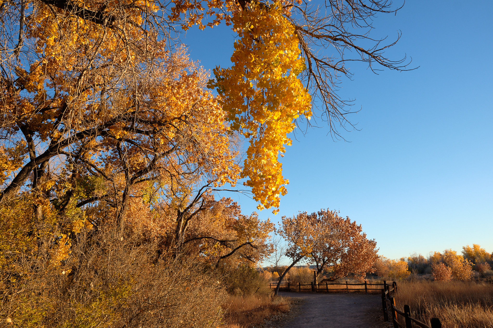
Fortunately, the retreat agenda allowed for time to stroll the grounds. One evening, I found the light welcoming me on a path through the trees.

And I was inspired to awake the next morning for the sunrise. I strolled down to the Rio Grande River, on the eastern edge of the resort property. A flock of geese took to the sky at dawn, dragging their feet across the still river. As the sun took to the sky, I found myself in a golden world.
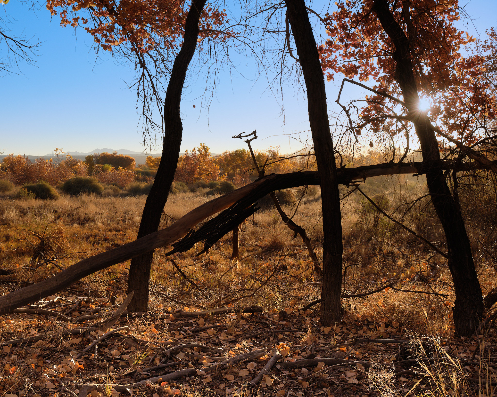
After the retreat, it was time for a road trip. I found this colorful beauty of pickup available alongside the road, awaiting its next reincarnation. I discovered this in a field on my way to the Salinas Pueblos Missions, about an hour south of Albuquerque.
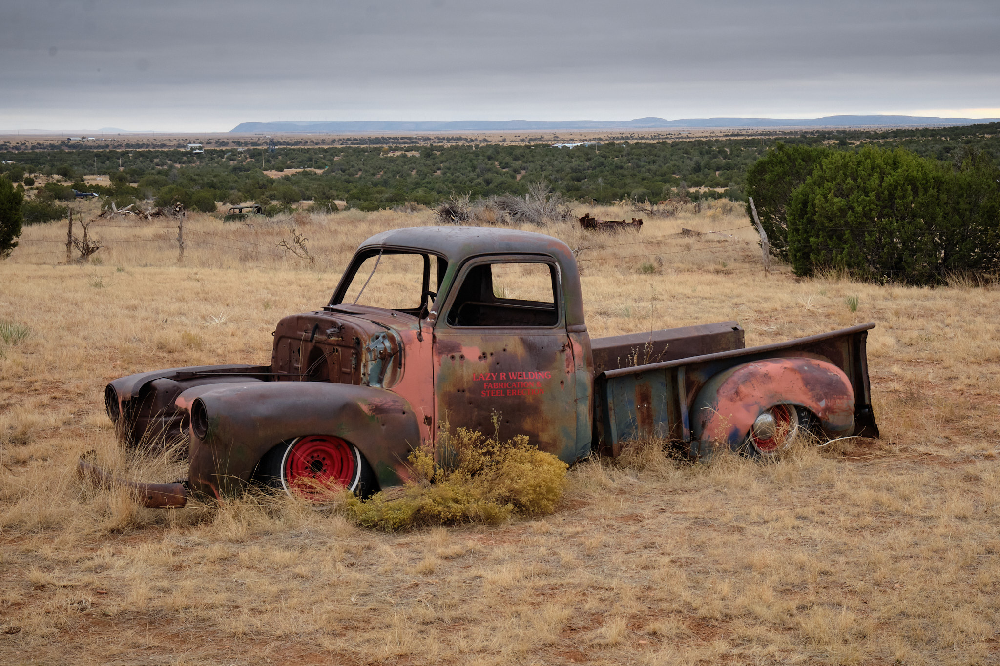
Per the park brochure: “The mission of San Gegrorio de Abó was founded in 1622. In 1626, the first church was completed from locally quaried red sandstone, ponderosa pine roof vigas and lintels, and finished with adobe and white gypsum plaster. Between 1626 and 1651 as a result from sucessful crop yields and trade, the population more than doubled in size bringing the number to roughly 1,400 people living at Abó. To accomodate, the second church, church of San Gregorio de Abó II was completed in 1651 and the remnants of that church is what you see today.” Then there was a drought, and the people were forced to leave for the Rio Grande valley.
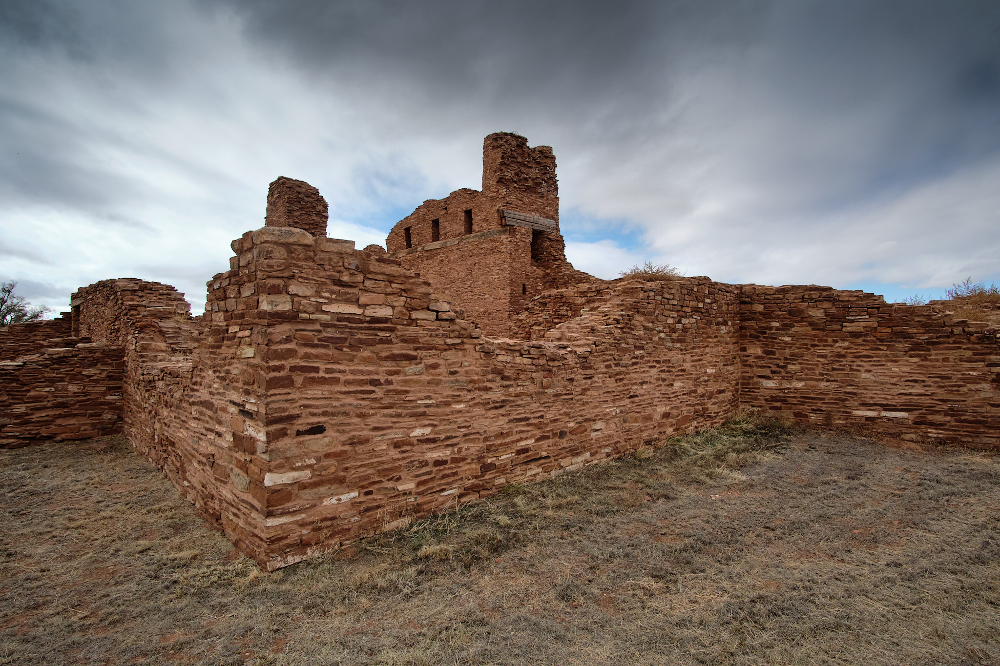
The brochure was a bit light on the other facts of the history, for example, how the Spanish imposed upon the local workforce to build their mission churches. Separately, I read about the Pueblo Revolt of 1680, a fascinating and complex history. Bottom line: A sprawling collaboration across different Pueblos collaborated to lay seige to the Spanish, and succeeded in forcing them out of New Mexico in 1680. Freedom lasted for twelve years. In a telling detail (per the book), the Pueblo leaders left many church buildings standing, but smashed the church bells into shards.
After visiting two different areas of ruins, I returned through the small town of Belen. I visited Belen to see the gallery of contemporary Jewish artist Judy Chicago. She has a fascinating personal story, featured in the gallery, of how she came to explore her own Jewish identity by touring the world and asking about the Holocaust. The gallery was created to manage the public interest in her 1977 feminist art project called The Dinner Party, which now I’d like to go see in Brooklyn.
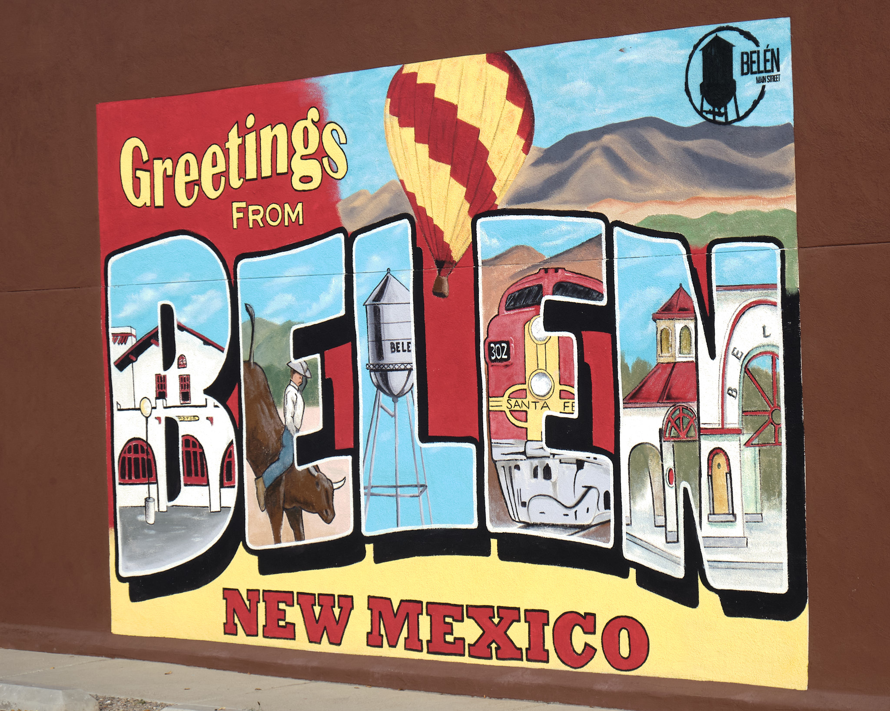
Belen had a lot of character. On a local recommendation, I had an amazing Chile Relleno at Pete’s before heading back to Albuquerque to meet up with my son Jacob for the next few days.
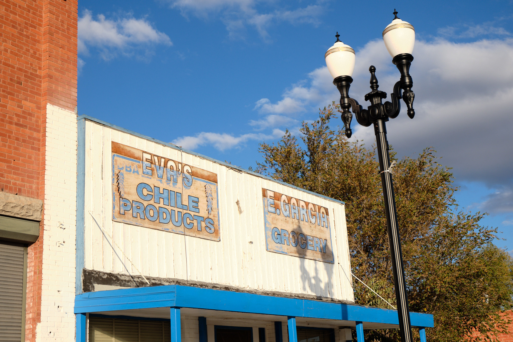
As it was raining in Albuquerque the next morning, Jacob and I first went for a look at the Pueblo Museum, which was an excellent introduction to history and culture. Then shifting art gears, we went to see some rock art. There are wonderful Petroglyphs just outside of Albuquerque, 400 of them to see along one 1.5 mile walk!
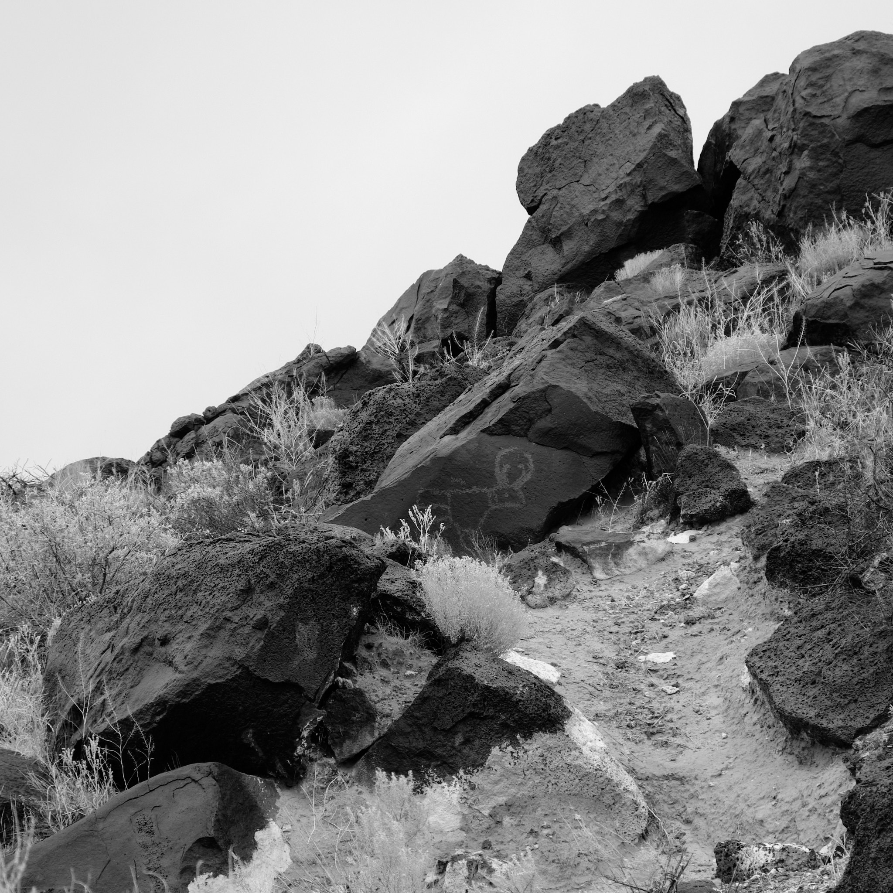
In Santa Fe, we first went to the Georgia O’Keefe Museum, a must visit! Of course, it featured her art across many periods. But the museum also shared aspects of her personal life, including a fascinating collection of recipes and canisters of ingredients from her kitchen. We were surprised to find a portrait of O’Keefe by Ansel Adams, a painting she did of Mount Fuji in Japan, and interesting examples of her artistic process.
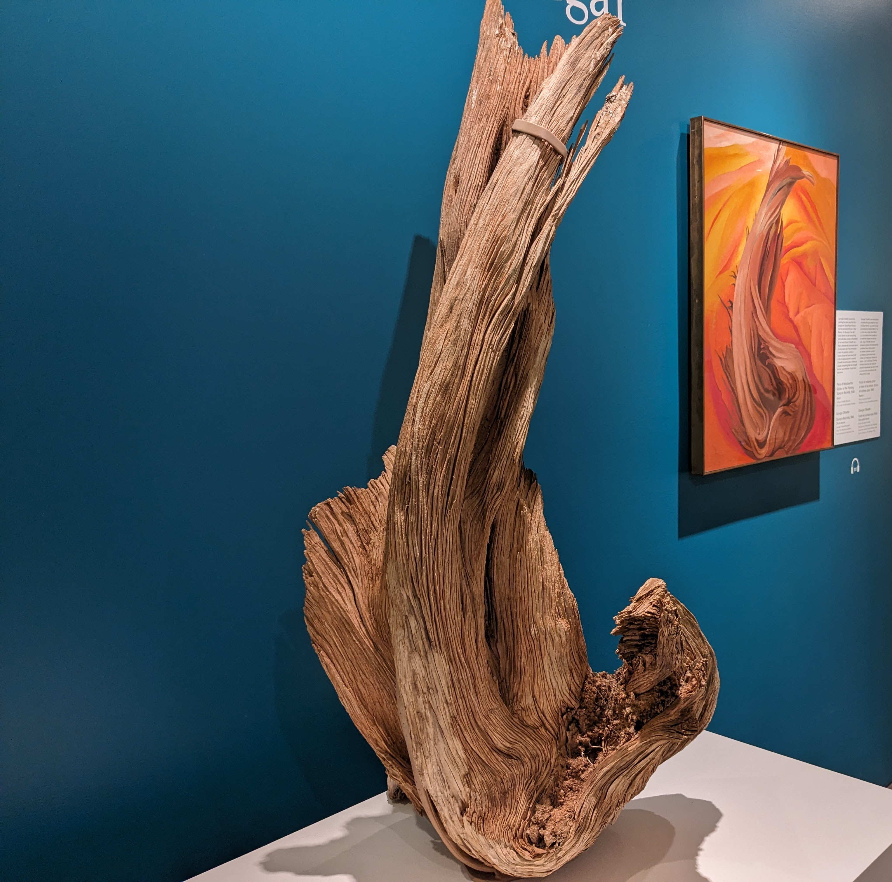
Santa Fe is full of character. This house was just across from the museum. We also strolled through the Plaza, the famous hotel there, and other historical sights.
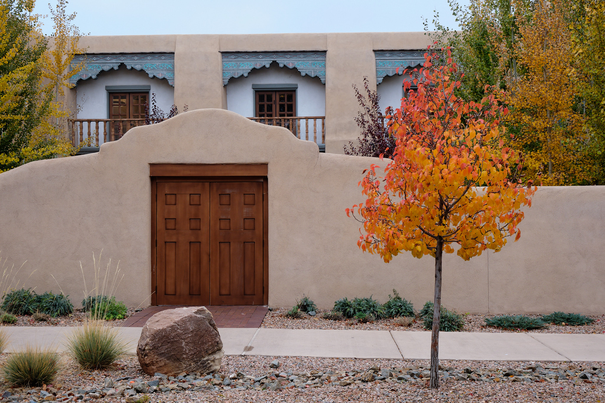
I liked the St Francis Cathedral as it has been decorated in modern times, and is very colorful. Check out the guitar player in the alter piece.
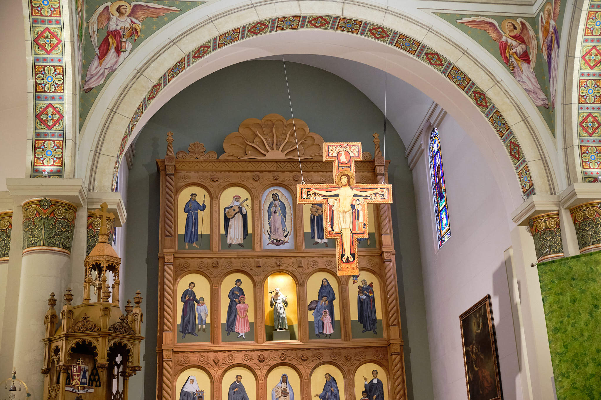
There is so much to do in Santa Fe! Jacob and I stayed at the atmospheric El Rey Court, went to the farmer’s market for local blue corn pupusas, met up with friends, and enjoyed the psychedelic Meow Wolf, which is a bit like playing the game of Myst. We also had two excellent dinners and found an Iconik coffee shop.
Our highlight was undoubtably the 7 mile hike from St John’s college to the top of Atayala Mountain, a 2000 ft climb to over 9000 ft. The air was thin up there and the views were incredible. The last mile or so was really a workout up steep switchbacks. But it was worth it!
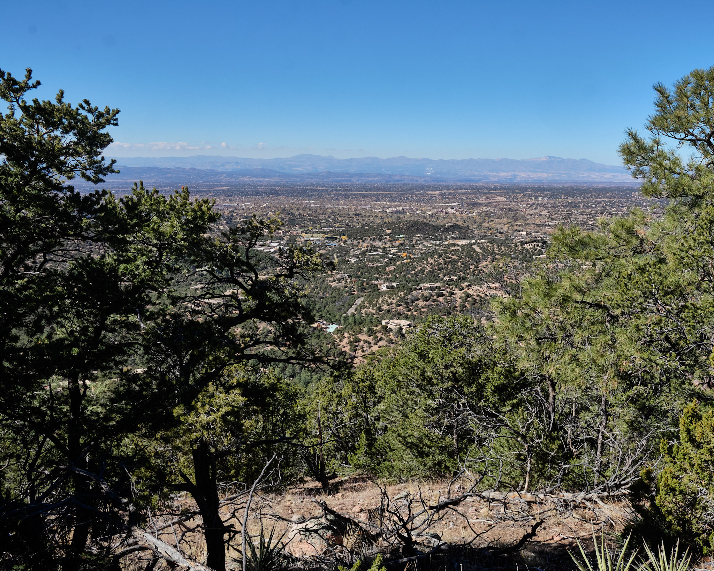
Great to spend a few days exploring New Mexico with Jacob!
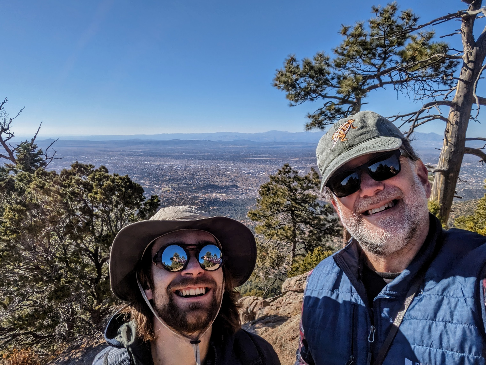